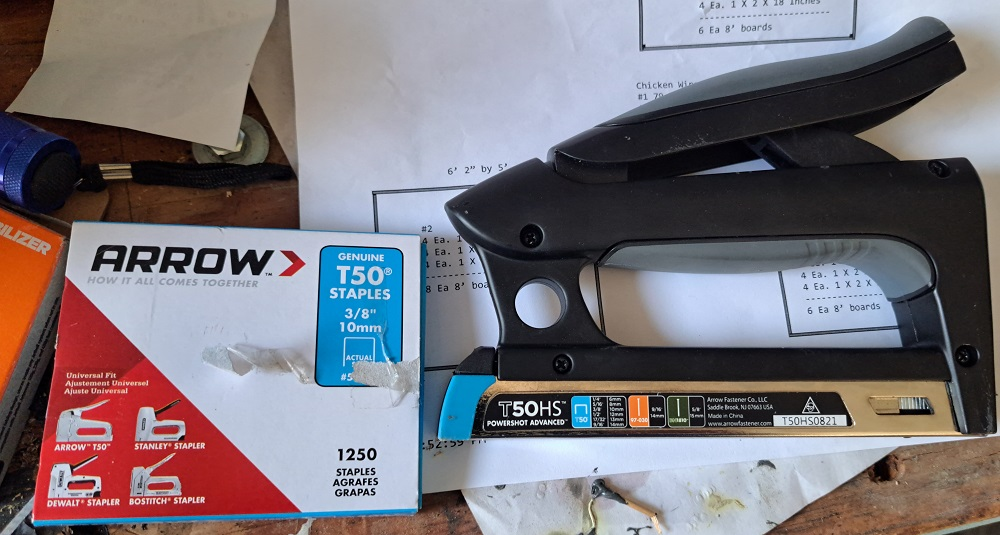
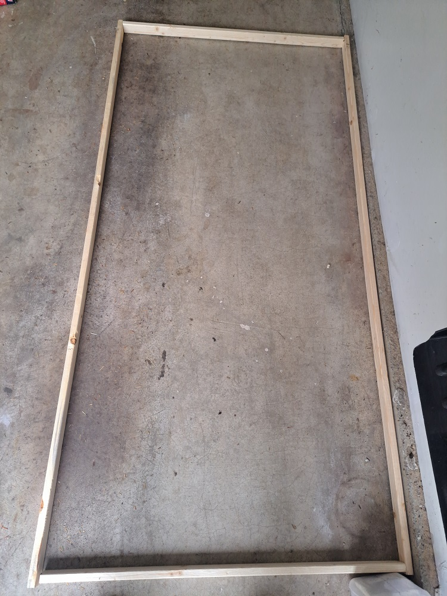
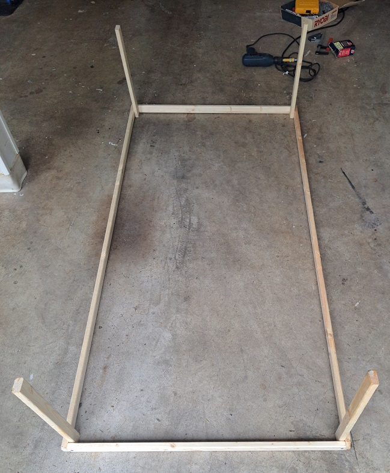
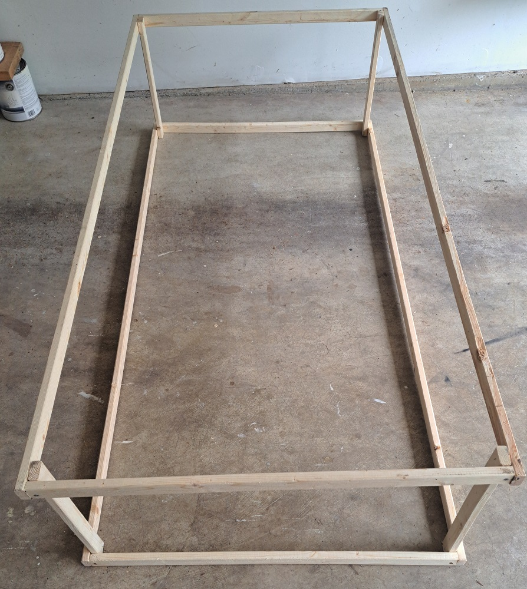

Rabbit Proof Enclosure Raised Beds

The plans are as a PDF and as a PPT. The following instructions should be used in conjunction with the PDF document.
Before beginning this project please take a look at the following pages. These pages contain things about simple carpentry I learned. When you are finished you can visit the Main Page:
1) Wood Is Not The Size They say it is
2) The right tools are important, and they really don't cost that much
3) Technique, a few hints and tricks help make the job go easier.
The rabbits decided that lettuce and carrot tops were very tasty, so the request was to build a rabbit proof enclosure for the raised beds. A friend, Dirk, built some large enclosures to protect his garden from deer and rabbits. I looked at his and made some minor modifications to protect the garden against rabbits. Dirk's enclosures had cross supports in the middle of his enclosures, the enclosures I made were small enough that wodden supports in the middle weren't needed.
To make the enclosures as useful as possible the first one was made large enough to fit over several of the raised beds. The second and third fit inside of the raised beds.
The only extra tool I had to buy was the T50 Staple Gun you see on the first page of the plans. Be SURE to get the correct staple gun for the T50, I had to take the first one back and get the larger version because the smaller staple gun could not handle the T50. You can see 'T50' on the staple gun itself. You can also just buy staples that you can pound in with a hammer but that is very time consuming and tedious.

Step 1 - First cut the bottom front and side boards. Butt the back board up against a side wall, I used the garage floor to keep everything straight because it is a large flat surface to work on. Attach the boards using #8 X 1-5/8" deck screws. The #8 size deck screw is smaller so you don't split the wood. You should now have a square frame (see the second page of the plans).

Step 2 - Cut the 18" side posts and attach them to the bottom frame

Step 3 - Cut the wood for the top frame, screw those four boards together (looks EXACTLY like the bottom frame). Flip over the other frame with the 18" side posts and screw the side posts into the frame you just made. Honestly what you choose as the 'top' and the 'bottom' doesn't matter until you put chicken wire on the top:

Step 4 - Now comes the pain in the neck part. Attaching the chicken wire. I did it differently for each of the three frames.